jussam 테마 기본값
특강·발표용 다크 테마. 검정 바탕 위에 파트별 시그니처 색, 카드·스탯·차트 컴포넌트로 숫자가 많은 발표를 만든다.
**굵게** 부분이 메시 그라디언트로 칠해진다.시작하기
프런트매터에 theme: jussam을 적거나, 아무것도 적지 않으면 익스텐션 기본값이 jussam이라 그대로 적용된다. 첫 슬라이드의 프런트매터(헤드매터)에는 덱 전체 설정과 첫 슬라이드 설정을 함께 적는다.
---
theme: jussam
title: 분기 개발 생산성 리뷰
titleTemplate: '%s · jussam 예제' # 브라우저 탭 제목
layout: cover # 첫 슬라이드는 표지
eyebrow: engineering review · 2026 Q3
footer: 플랫폼팀 / 2026년 10월
---
# 분기 개발 생산성,<br>**숫자로 돌아보기**
배포 주기 · 리뷰 시간 · 장애 복구, 세 지표의 세 달캔버스는 1280×720px 기준이라 컴포넌트 크기 값(px)은 이 기준으로 적는다. 창 크기에 맞춰 Slidev가 통째로 비율 축소한다.
레이아웃 3종
| 레이아웃 | 쓰임 | 프런트매터 |
|---|---|---|
cover | 표지·마무리·Q&A. 메시 그라디언트 배경, 위아래 머리말 | eyebrow(위 작은 글), footer(아래 작은 글), mesh(soft 옅게 / none 없음), source(출처 각주) |
section | 파트 표지. 제목이 전체 그라디언트로 칠해진다 | part(1~4 → 머리말 "part 0N"과 그 파트 색), eyebrow(머리말 직접 지정) |
default | 본문. 적지 않으면 이것 | eyebrow(제목 위 머리말, 파트 색), part(1~4 시그니처 색), source(아래 출처 각주 "출처 · …") |
---
layout: section
part: 1
---
# 배포 파이프라인
자동화 전후를 같은 자로 재기
---
part: 1
eyebrow: automation
source: CI 대시보드
---
# 자동화 이후 **배포는 일상**
본문…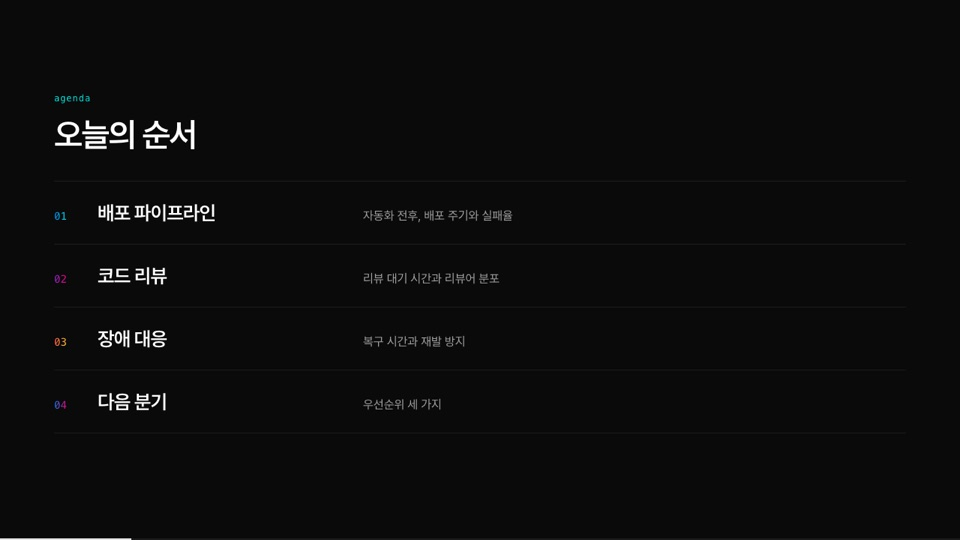
파트 색
part를 1~4로 주면 그 슬라이드의 강조색(제목 굵게, 머리말, 카드 윗선, 숫자, 세로선)이 함께 바뀐다. 파트 표지와 그 파트의 본문에 같은 번호를 쓰면 색으로 흐름이 이어진다.
| part | 색 | 예 |
|---|---|---|
| 1 | 파랑 → 청록 | #007cf0 → #00dfd8 |
| 2 | 보라 → 분홍 | #7928ca → #ff0080 |
| 3 | 빨강 → 노랑 | #ff4d4d → #f9cb28 |
| 4 | 파랑 → 분홍 | #007cf0 → #ff0080 |
글쓰기 규칙
# 제목한 줄이 슬라이드 제목(44px). 제목 안의**굵게**는 파트 색 그라디언트가 된다. 표지에서는 전체 메시 그라디언트.- 제목 바로 아래 문단은 설명 줄(lead, 회색 20px)로 붙는다.
- 문단·목록·표·코드·인용은 Slidev 마크다운 그대로. 목록 글머리는 짧은 가로선, 표는 얇은 가로줄, 코드는 어두운 상자.
- 표지(cover)에서
##는 44px,###는 26px 회색 맺음말이고,###안의**굵게**는 그라디언트. - 줄바꿈은
<br>. 숫자·단위·문장부호는 한국어 어절 중간에서 끊기지 않게(word-break: keep-all) 처리된다.
컴포넌트
md 안에서 태그로 쓴다. 프롭은 각 파일(themes/jussam/components/*.vue) 머리 주석에도 있다. 아래 표의 "슬롯"은 여는 태그와 닫는 태그 사이에 넣는 내용이다.
Grid — 격자 배치
| 프롭 | 뜻 | 기본 |
|---|---|---|
cols | 열 수(2, 3) 또는 grid-template-columns 값("1fr 400px") | 2 |
gap | 칸 사이 px | 20 |
align | align-items 값(예: start) | - |
title | 격자 위에 붙는 작은 차트 제목 | - |
<Grid cols="2" gap="18">
<Card acc k="web" t="리뷰어 쏠림">리뷰의 70%가 두 사람에게 몰린다<br>리뷰어 순환 규칙 도입 검토</Card>
<Card acc k="mobile" t="큰 PR">PR 평균 900줄, 리뷰 대기 2.5일</Card>
</Grid>
<Grid cols="1fr 400px" gap="44" align="start">
…왼쪽 칸…
<Grid cols="1" gap="16">…오른쪽에 세로로 쌓이는 카드…</Grid>
</Grid>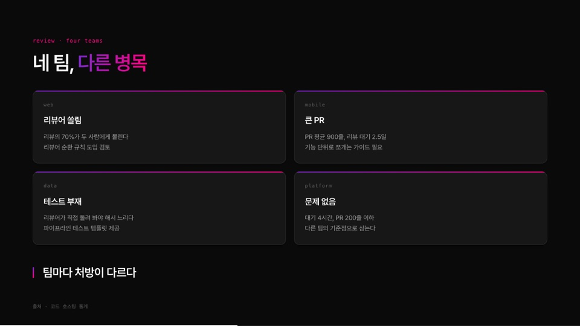
Card — 카드
| 프롭 | 뜻 |
|---|---|
k | 작은 머리말(모노 글꼴) |
t | 제목 |
acc | 위쪽 그라디언트 선 |
sm / lg | 여백 작게 / 크게 |
dim | 흐린 카드(위험 신호 같은 대비용) |
| 슬롯 | 본문. 빈 줄로 띄우면 마크다운(굵게·문단) 사용 가능 |
<Card sm>
시장 규모 18개월 만에 **두 배**<br>2024년 51억 달러 → 2026년 약 128억 달러
</Card>
<Card lg acc k="why it matters" t="리뷰가 빨라진 이유">
테스트가 있으면 리뷰어가 직접 돌려 보지 않아도 된다
남은 36%는 레거시 서비스. 다음 분기에 우선 처리
</Card>
<Card dim k="위험 신호" t="일단 진학하는 선택">취업이 안 되니 시간을 벌자는 판단</Card>Stat — 큰 숫자 카드
| 프롭 | 뜻 | 기본 |
|---|---|---|
n | 숫자 | 필수 |
unit | 단위(작게 붙음) | - |
label | 숫자 아래 설명 | - |
fill | 미터 채움 %. 있으면 미터가 보인다 | - |
mark | 미터 위 기준선 위치 % | - |
scale | 미터 오른쪽 끝 라벨 | 100% |
sm | 작은 흰 숫자(미터 없이 요약용) | - |
| 슬롯 | 미터 아래 보충 설명 | - |
<Grid cols="3">
<Stat n="42" unit="회" label="9월 배포 횟수" :fill="84" :mark="50" scale="50회">눈금은 분기 목표 25회 지점</Stat>
<Stat n="2.1" unit="%" label="배포 실패율" :fill="21" scale="10%">목표 5% 이하</Stat>
<Stat n="40" unit="분" label="핫픽스 리드타임" :fill="33" scale="2시간">목표 1시간 이하</Stat>
</Grid>
<Grid cols="3" gap="16">
<Stat sm n="38" unit="%" label="기능 개발" />
<Stat sm n="27" unit="%" label="운영 · 장애" />
<Stat sm n="35" unit="%" label="리뷰 · 회의" />
</Grid>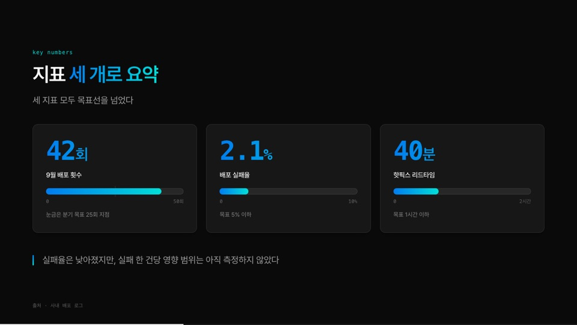
Kicker · Note · Spacer — 맺음말, 주석, 여백
| 컴포넌트 | 프롭 | 뜻 |
|---|---|---|
Kicker | lead, muted | 왼쪽에 파트 색 세로선이 붙는 맺음말. 기본은 굵은 26px, lead면 20px 설명 톤, muted면 회색 |
Note | - | 작은 회색 주석(참고·출처 보충) |
Spacer | - | 남는 세로 공간을 차지한다. 표지에서 아래 글을 바닥으로 밀 때 |
<Kicker>알림 확인이 배포 작업의 세 배</Kicker>
<Kicker lead>실패율은 낮아졌지만, 실패 한 건당 영향 범위는 아직 측정하지 않았다</Kicker>
<Kicker muted>규칙보다 먼저, 리뷰를 기다리는 시간이 보이게 만든다</Kicker>
<Note>참고 · 설문 응답 31명, 주 단위 자기 보고 기준<br>회의 시간은 캘린더 집계와 10% 안팎 차이</Note>Hero — 큰 숫자 한 개
| 프롭 | 뜻 |
|---|---|
n | 큰 숫자(그라디언트) |
unit | 단위 |
caption | 숫자 아래 작은 글 |
| 슬롯 | 오른쪽 칸. ## 제목과 설명 문단(빈 줄로 띄워서) |
---
layout: cover
mesh: soft
eyebrow: hook
source: 사내 배포 로그 (2026년 7~9월)
---
<Hero n="42" unit="회" caption="7월 11회 → 9월 42회">
## 한 달 배포 횟수, 세 달 만에 네 배
배포 자동화를 켠 뒤 생긴 변화<br>이번 리뷰는 이 숫자가 어디서 왔는지 따라간다
</Hero>
<Spacer />
### 무엇이 바뀌었나Agenda · NumList + Item — 번호 목록
Agenda는 목차(큰 제목 + 오른쪽 설명), NumList는 본문용 번호 목록. 둘 다 안에 Item을 나열하면 번호(01, 02 …)가 자동으로 붙는다.
| Item 프롭 | 뜻 |
|---|---|
title | 항목 제목 |
part | 번호 색(1~4). 목차에서 파트마다 다른 색을 줄 때 |
| 슬롯 | 설명 |
<Agenda>
<Item part="1" title="배포 파이프라인">자동화 전후, 배포 주기와 실패율</Item>
<Item part="2" title="코드 리뷰">리뷰 대기 시간과 리뷰어 분포</Item>
</Agenda>
<NumList>
<Item title="PR은 400줄 이하">넘으면 자동으로 분할 요청 코멘트</Item>
<Item title="리뷰어 자동 배정">최근 2주 리뷰 수가 적은 사람부터</Item>
</NumList>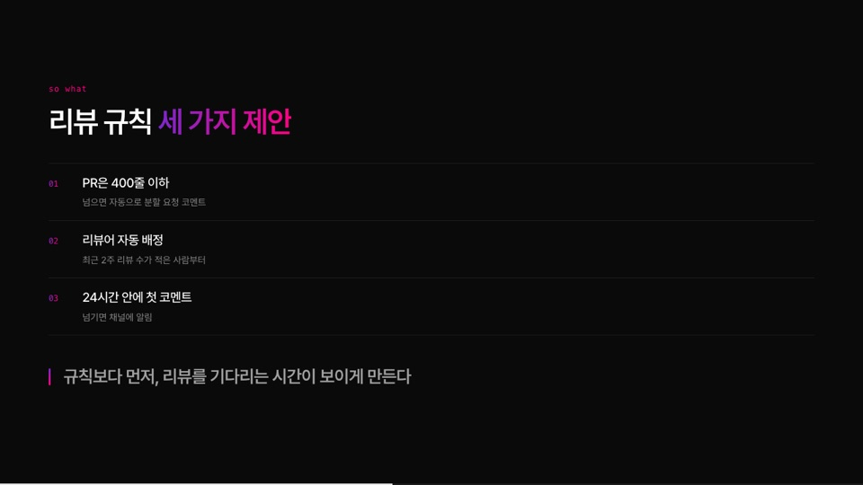
BeforeAfter + Side — 전후 비교
| Side 프롭 | 뜻 |
|---|---|
from / to | 왼쪽(흐림) / 오른쪽(강조). 둘 중 하나 |
k | 작은 머리말 |
v | 큰 글 |
| 슬롯 | 설명. 빈 줄로 띄우면 마크다운 목록도 됨 |
<BeforeAfter>
<Side from k="before" v="빨리 끄기">복구 시간만 재고 끝<br>같은 장애가 다음 달에 또 난다</Side>
<Side to k="after" v="다시 안 나게">포스트모템 액션 아이템을 추적<br>재발 건수를 지표로 본다</Side>
</BeforeAfter>
<BeforeAfter>
<Side from k="흔한 방식" v="문서 100쪽">
- 아키텍처 문서를 먼저 다 읽게 한다
- 첫 PR까지 평균 3주
</Side>
<Side to k="바꾼 방식" v="첫날 첫 PR">
- 작은 이슈 하나를 첫날 배정
- 리뷰어가 곧 온보딩 담당
</Side>
</BeforeAfter>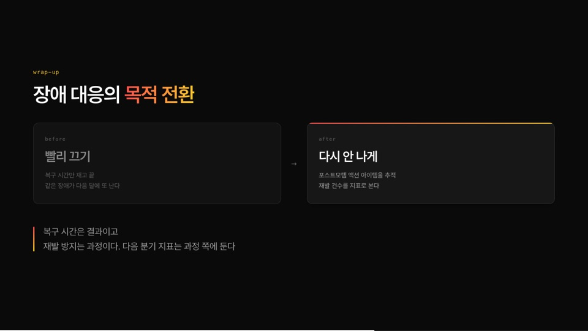
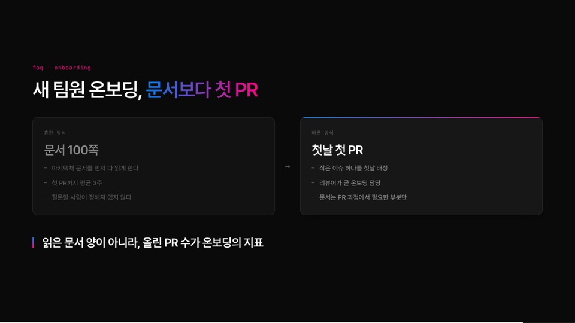
Timeline — 가로 타임라인
월 눈금은 start~end 범위에서 자동으로 그린다. 데이터가 길어 태그를 여러 줄로 쪼개면 문단으로 잡히므로, 슬라이드 프런트매터에 YAML로 두고 v-bind로 넘긴다.
| 프롭 | 뜻 |
|---|---|
start, end | 축 범위 YYYY-MM-DD |
events | 배열. 각 항목: date(YYYY.MM.DD), name, org, desc(<br> 가능), hl(강조 점) |
---
part: 1
eyebrow: timeline
timeline:
start: 2026-07-01
end: 2026-10-01
events:
- date: 2026.07.14
name: CI 캐시 도입
org: platform
desc: 빌드 시간 14분 → 6분
- date: 2026.09.22
name: 카나리 배포
org: platform · sre
desc: 5% 트래픽으로 먼저 검증<br>문제 시 자동 롤백
hl: true
---
# 세 달 동안 **바뀐 것 세 가지**
<Timeline v-bind="$frontmatter.timeline" />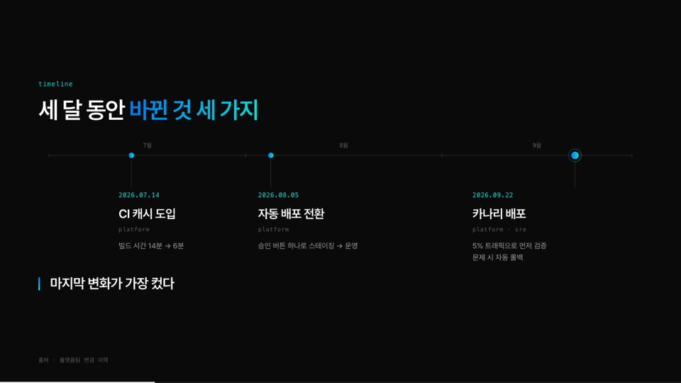
Gauge · Slope — 게이지와 기울기
| 컴포넌트 | 프롭 |
|---|---|
Gauge | value(0~100), label(숫자 아래), note(카드 아래 한 줄) |
Slope | from·to([x 라벨, 값]), max(세로축 최댓값), unit(기본 %), k·t(카드 머리말·제목) |
<Grid cols="330px 1fr">
<Gauge :value="91" label="자동 배포 비율" note="수동 배포는 핫픽스뿐" />
<Slope k="deploy frequency" t="주당 배포 횟수" :from="['7월', 3]" :to="['9월', 11]" :max="12" unit="회" />
</Grid>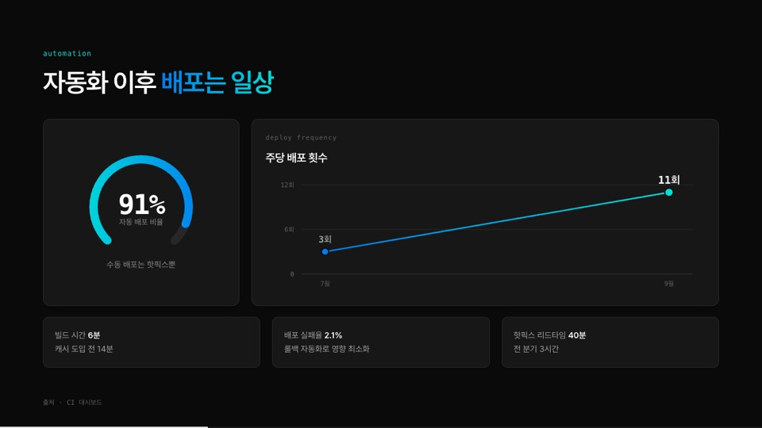
Funnel · Branch — 퍼널과 분기
| 컴포넌트 | 프롭 |
|---|---|
Funnel | rows([라벨, 값, 폭%] 배열, 마지막 줄은 그라디언트), title, note |
Branch | src(위 알약 글), n(갈래 수, 기본 3). 슬롯에 Card n장 |
<Funnel title="분기 장애 처리 단계 · 건수" :rows="[['알림 발생', '184', 100], ['사람이 확인', '61', 72], ['장애로 분류', '12', 46], ['포스트모템', '5', 30]]" note="폭은 단계별 건수 비율" />
<Branch src="알림 184건">
<Card k="01" t="자동 복구 가능">재시도 · 스케일 아웃으로 해결</Card>
<Card k="02" t="정보성">임계치 근접 경고<br>일일 요약으로 묶는다</Card>
<Card k="03" t="즉시 대응">실제 장애 후보<br>온콜에게만 보낸다</Card>
</Branch>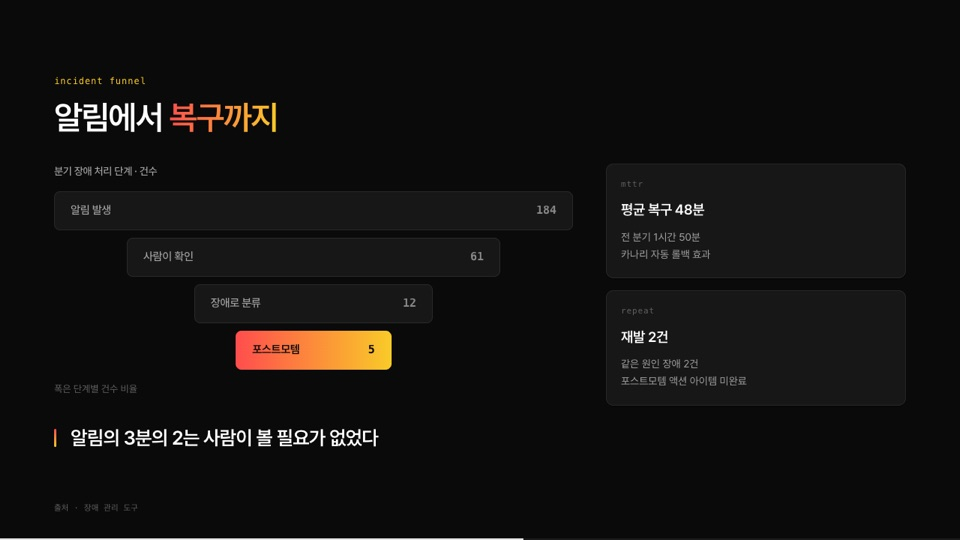
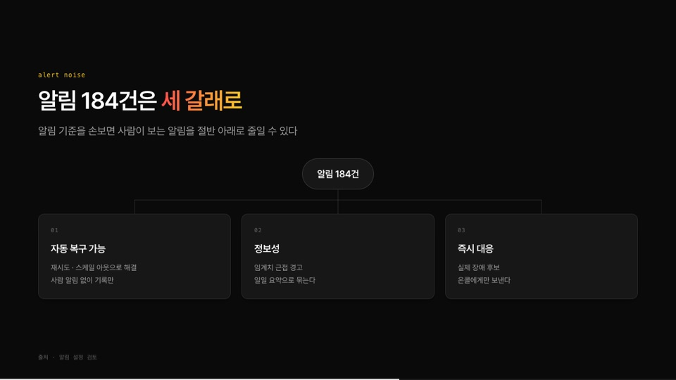
HBar · Meter · Bars — 막대와 미터
| 컴포넌트 | 프롭 |
|---|---|
HBar | rows([라벨, 값, 강조?] 배열), max(막대 길이 기준), title |
Meter | label, value(표시 글), fill(채움 %), scale(오른쪽 끝 라벨, 기본 100%), foot(아래 한 줄) |
Bars | labels(x 라벨 배열), groups(패널 배열: name, legend, color(c1/c2), values(null이면 "자료 미제공"), foot), max, unit, na(결측 글, 기본 "자료 미제공") |
<HBar title="운영 시간 중 비중 · 단위 %" :rows="[['알림 확인', 18.5, true], ['배포 작업', 6.2], ['장애 대응', 11.8]]" :max="25" />
<Grid cols="1" gap="24" title="자동 테스트가 있는 저장소 비중 · 9월 기준">
<Meter label="서비스 저장소" value="64%" :fill="64" scale="전체 100%" foot="분기 초 41%" />
<Meter label="라이브러리 저장소" value="83%" :fill="83" scale="전체 100%" foot="분기 초 70%" />
</Grid>---
bars:
labels: ['7월', '8월', '9월']
max: 60
unit: 시간
groups:
- name: web
legend: web 리뷰 대기
values: [52, 31, 18]
foot: 두 달 연속 감소
- name: mobile
legend: mobile 리뷰 대기
values: [null, 58, 49]
foot: 아직 이틀 이상
---
# 리뷰 대기, **갈리는 중**
<Bars v-bind="$frontmatter.bars" />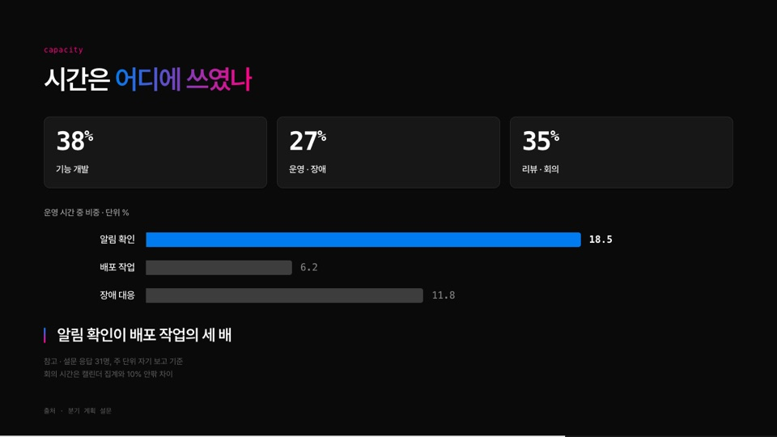
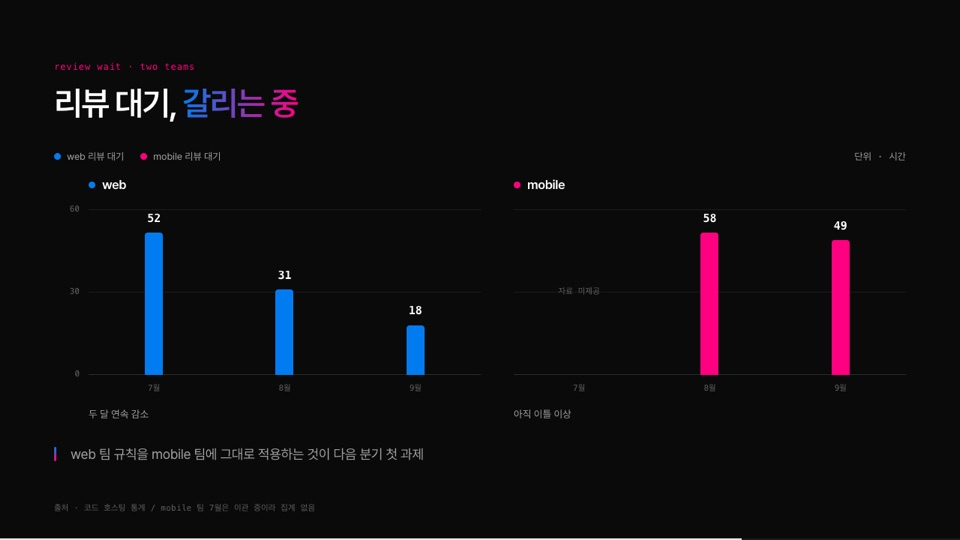
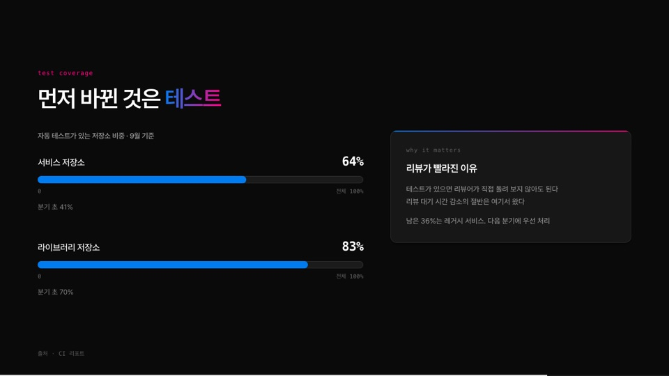
Mul · Formula — 곱셈 도식
| 컴포넌트 | 프롭 |
|---|---|
Mul | 슬롯에 Card 세 장. 사이의 × 는 자동 |
Formula | tokens(낱말 배열. × = 같은 연산자는 그라디언트, 숫자는 흰 굵은 글), note(오른쪽 설명) |
<Mul>
<Card lg acc k="axis 01" t="자동화">배포 · 테스트 · 롤백<br>사람이 반복하는 일을 없앤다</Card>
<Card lg acc k="axis 02" t="가시성">대기 시간 · 재발 건수<br>보이지 않으면 고칠 수 없다</Card>
<Card lg acc k="axis 03" t="규칙">PR 크기 · 리뷰 배정 · 알림 기준</Card>
</Mul>
<Formula :tokens="['자동화', '×', '가시성', '×', '0', '=', '0']" note="하나라도 0이면 결과도 0" />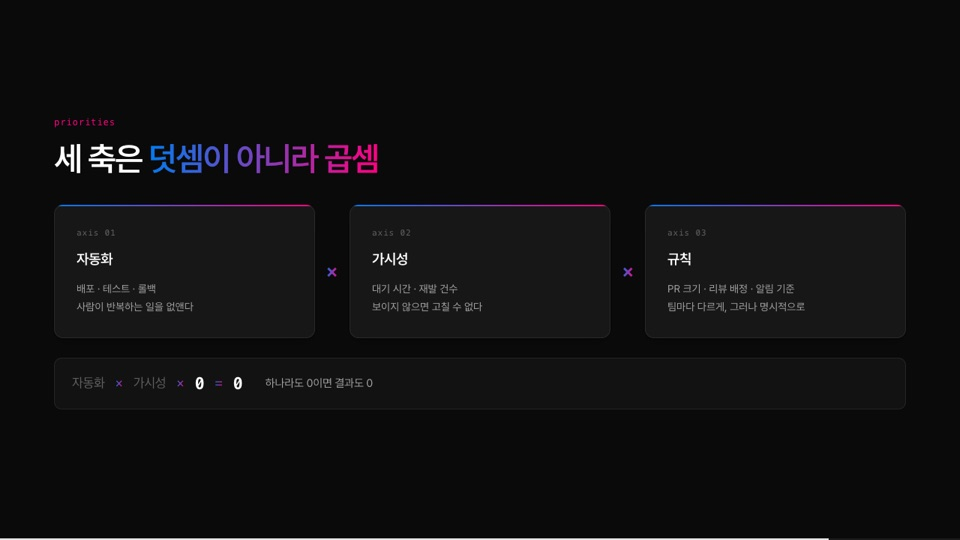
주의할 점
- 컴포넌트 안에 마크다운(굵게·목록·문단)을 쓰려면 여는 태그와 닫는 태그 앞뒤를 빈 줄로 띄운다. 빈 줄 없이 붙여 쓰면 글자 그대로 들어간다(
<br>은 된다). - 긴 데이터는 프런트매터에. 태그를 여러 줄로 쪼개면 Slidev의 마크다운 파서가 문단으로 잡아 깨진다.
Timeline·Bars처럼 배열이 길면 슬라이드 YAML에 두고v-bind="$frontmatter.이름"으로 넘긴다. **46%**가처럼 굵게 바로 뒤에 조사가 붙으면 닫히지 않는다(CommonMark 규칙: 닫는**앞이 문장부호이고 뒤가 글자). 그런 곳만<b>46%</b>가로 쓴다.- 한 줄로 쓴 컴포넌트(
<Kicker>…</Kicker>)는 마크다운이<p>로 감싸지만 테마가 그 영향을 되돌려 두었으니 신경 쓰지 않아도 된다. - 직접 HTML을 쓸 때
p1,h3,pt,ml같은 짧은 클래스와 SVG의font-size="11"속성은 Slidev의 UnoCSS가 유틸리티로 해석해 크기를 바꾼다. 테마 클래스는 이미 피해 두었고, 직접 쓸 때는style로 지정한다.
전체 예제
jussam-example.md — 위 코드가 전부 들어 있는 22장짜리 덱(가상의 수치). 내려받아 우클릭 → Open with Slidev.
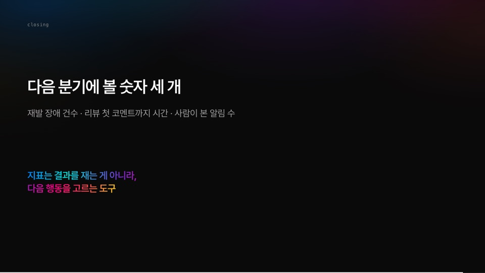
### 굵게 그라디언트)